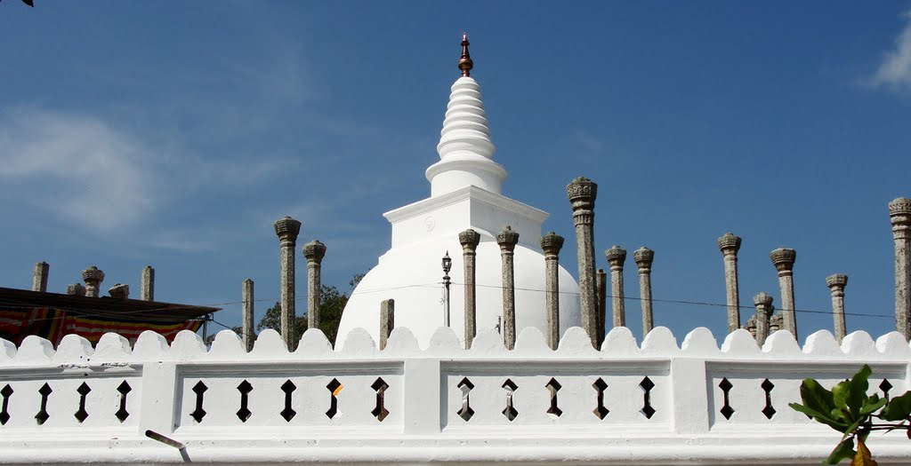

Thuparamaya
This is the first stupa to be built in the country after the introduction of Buddhism to Sri Lanka. Built in the time of king Devamnampiyatissa (250BC – 210BC) this was a stupa as well as an Aramic complex (monastery). Today ruins of this complex covers nearly 3 ½ acres. The stupa was built on the instructions of Mahinda Thero who brought Buddhism to the island to enshrine the right collar-bone of Lord Buddha. On this stupa you can see a unique architectural feature called vatadage, a stupa-house. This building completely housed the stupa. At present four concentric circles of stone pillars are found around the stupa. They diminish in height from inner most circle and at one time carried the weight of a dome-shaped roof over the stupa. There has been 176 pillars which supported this stupa house and in 1896, 31 complete pillars with capitals has been standing. This vatadage has been built in the 1st century AC. In the seventh century BC the stupa was covered with a gold and silver casing and the vatadagê (stupa-house) with golden bricks and golden doors. Then Pandyans (south Indian Tamil) plundered the stupa of it’s all gold, jewels and treasures. Again Mahinda IV (956-972) re installed the golden casings and the golden doors but again in the late 10th century Colas (south Indian Tamil) completely plundered the complex of its valuables. The renovation of the present stupa was completed in 1862 which as completely changed the ancient features of this most ancient stupa. On the left to the stupa you can see the conserved remains of an Image house belonging to this stupa complex. This was built by king Devanampiyatissa in the 3rd century BC and six hundred years later this was destined to be the fist to house the Tooth Relic of Buddha, to claim the title of first Dalada Maligawa in the island. The building is adorned by a pair of beautiful guard stones at the entrance. Some of the pillars still holds the lotus shaped crown and smooth polished surface which has survived over 2 millennia is a rarity in the building in Anuradhapura. Next to this is remains of a small building with the two smaller guardstone and a granite doorway. Next to this is an ancient well made of granite blocks. On the opposite side of the walkway to the stupa you will find a small stupa called Padalanchana Stupa. On the north-western side of the stupa you can see the Basawakkulama tank. This is the most ancient monument in Anuradhapura. This was built by king Pandukabhaya in the 4th century BC.
